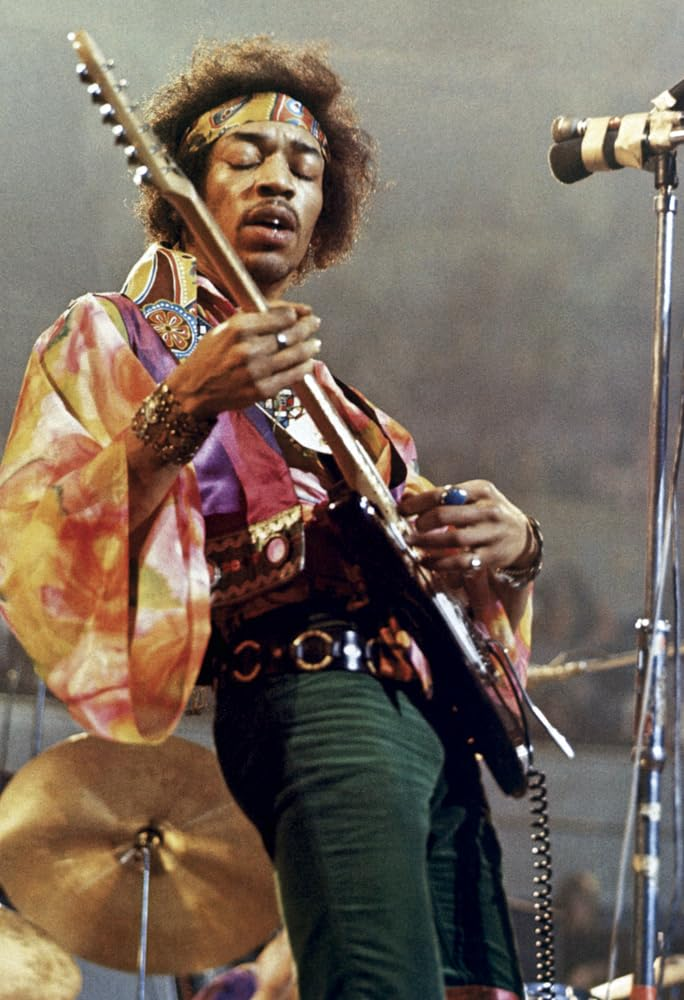

Over the years I have been inspired by many diffrent people the most promenent being.
Jimi Hendrix
Vinne Paul Abbott
George Lucas
My Dad

Why they inspire me
1. Jimi Hendrix
Jimi Hendrix inspires me because he is one of the most creative guitarists of the 20ths century. Jimi Hendrix wrote some amazing songs that have helped me get threw a lot of tough times it is his music that really inspired me to pick up the guitar and that is now something I do constantly and although I may never be as good as him he inspires many people to do good with his message to spread peace and love.
2. Vinnie Paul Abbott
Vinnie Paul Abbott is a drummer in the band Pantera. Although Vinnie paul Abbott didn't inspire me to start playing the drums he definitely inspired my playing style with his aggressive fills and cymbal hits. Vinnie Paul Abbott sadly passed away in 2018 due to coronary artery disease. Although he may not be alive anymore he was a big part of my teenage and pre teen years.
3. George Lucas
George Lucas has famously written the Star Wars movies. The Star Wars movies were a big part of my childhood and they are the reason I got into writing and making short films. I have always looked up to George Lucas for his creativity and passion.
4. My Dad
Last but definitely not least is my dad. My dad is a website designer and tech entrepreneur. When I was younger my dad would encourage me and my siblings to learn how to program and use technology, I was the only one who learned but that helped me become the person I am today.